ElectoApp
Creation of a mobile application to discover affinities with political positions and Spanish political parties.
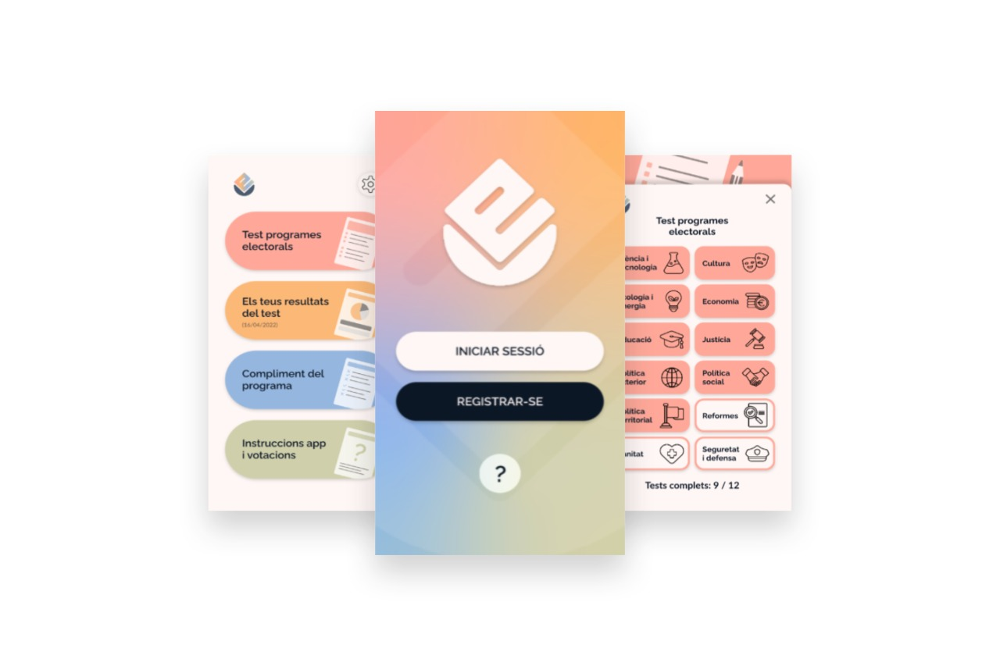
Overview
ElectoApp is a research-driven concept designed to help voters discover political alignment based on policy preferences rather than party recognition. The project explores how digital tools can improve political awareness and decision-making.
Problem & Goals
Voters often make decisions based on party familiarity rather than a clear understanding of political programs. Electoral information is typically extensive, fragmented, and difficult to compare.
This creates a gap between voter preferences and final voting decisions.
The project aimed to:
1. Reduce complexity in understanding electoral programs
2. Help users identify political alignment through structured comparison
3. Improve accessibility of political information across age groups
4. Ensure neutrality in presentation of parties and ideologies
5. Create a scalable system usable in app, web, and kiosk formats
Process
Moodboard & Referents
The initial visual exploration focused on a neutral palette based on white, black, and navy blue to avoid suggesting political affiliation. During the design process, this evolved into a more colorful yet desaturated palette that represented the diversity of political ideas while remaining visually impartial.
An off-white background was selected to evoke paper ballots without the cold appearance of pure white, creating a more approachable and educational interface.
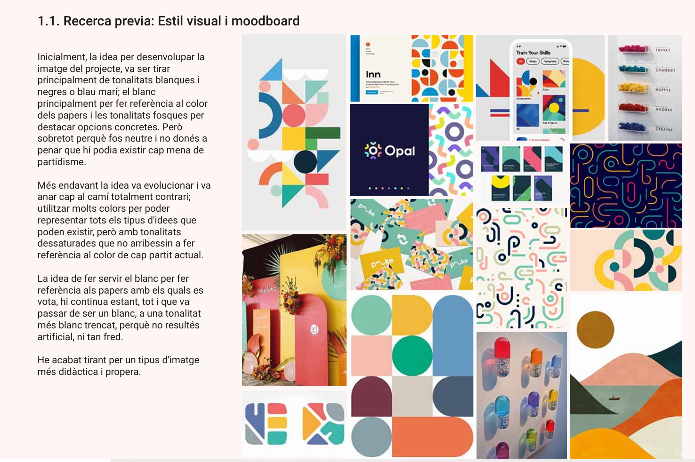
This is the list of visual references used to develop the visual part of the project, along with an explanation of what I used from each one to form the image of ElectoApp:
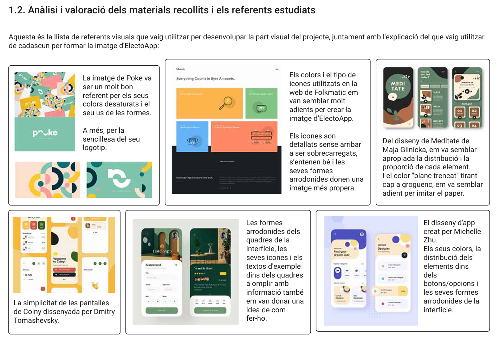
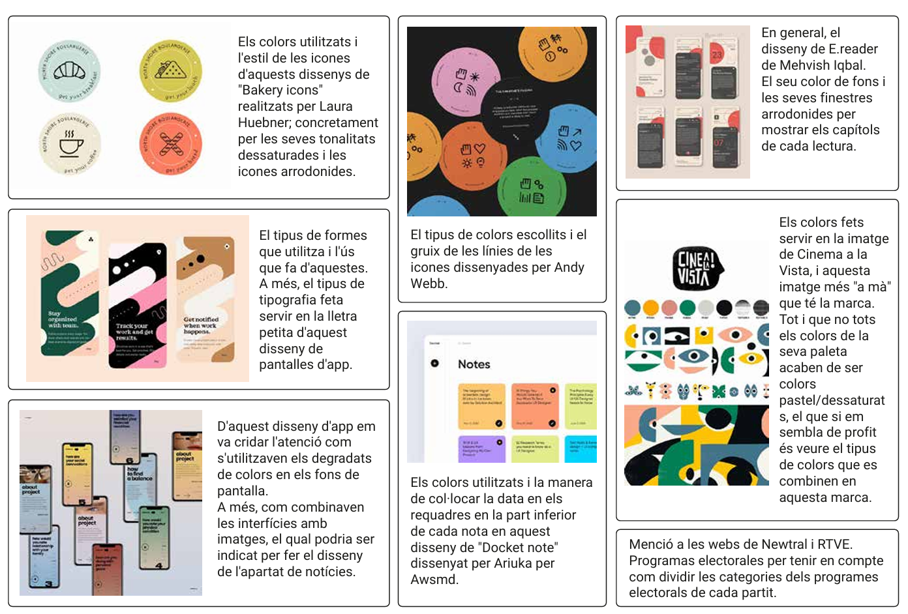
Lean Canvas
The Lean Canvas helped define the project's value proposition, target users, and key challenges. It identified the main problem as the difficulty voters face when comparing political programs objectively and highlighted the opportunity to simplify this process through an accessible digital experience. This exercise also clarified the project's unique value: helping users make informed decisions based on policies rather than party recognition.
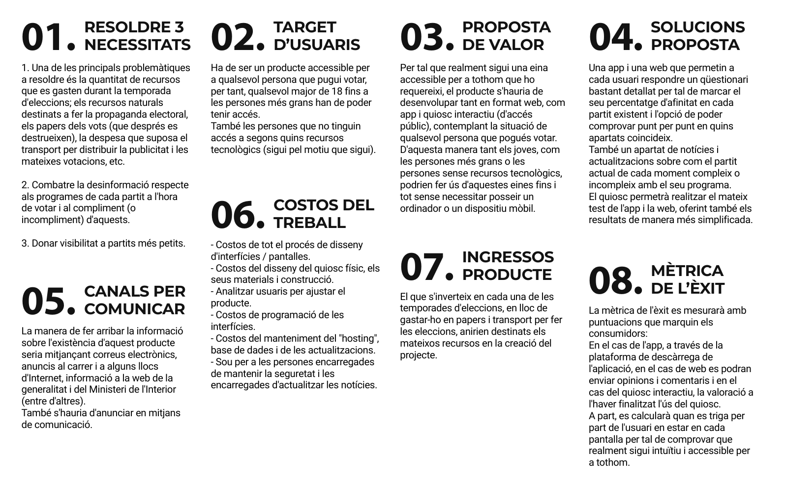
Buyer Persona
Six personas were created to represent different types of voters. They helped identify users' motivations, frustrations, and digital behaviors, ensuring that interface decisions addressed both politically engaged users and those with limited knowledge of electoral programs.
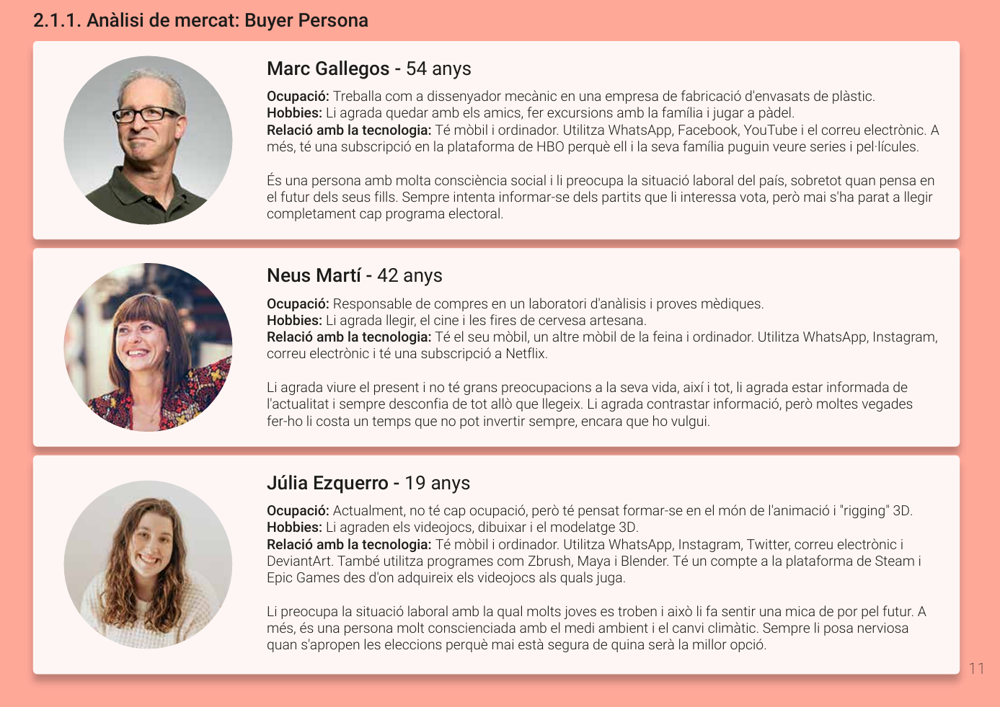
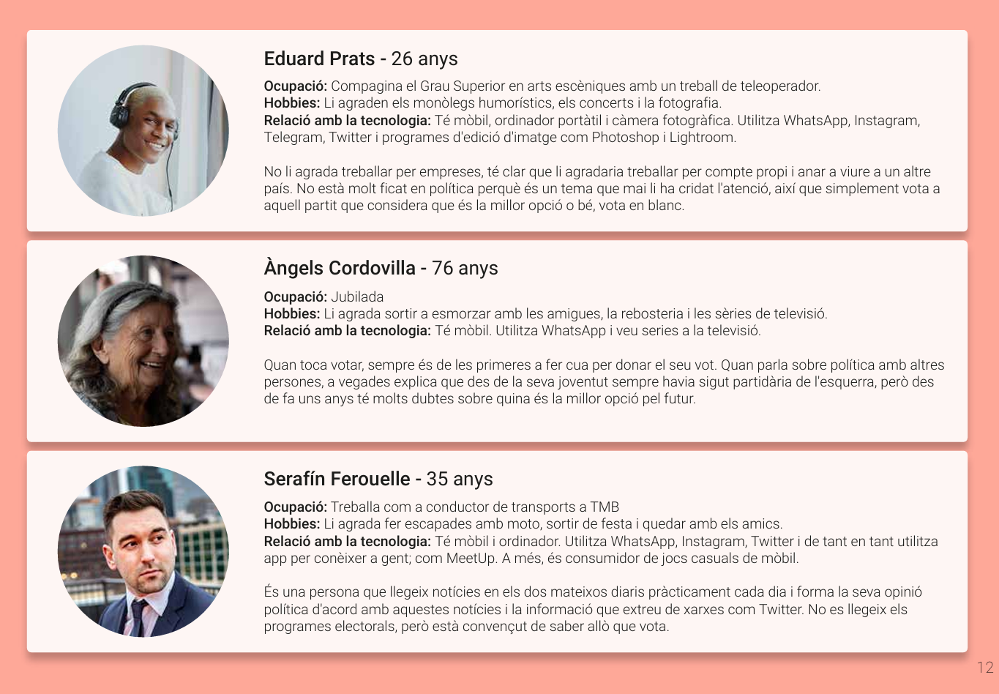
Competition Analysis
Existing political comparison tools, news platforms, and electoral information websites were analyzed to identify common patterns and opportunities for improvement. While most competitors focused on presenting information, few provided an intuitive way to discover political alignment through guided interaction. This revealed an opportunity to prioritize usability, transparency, and educational value.
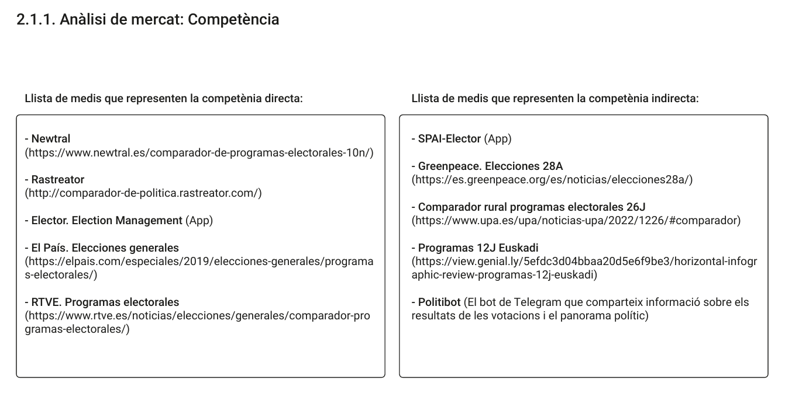
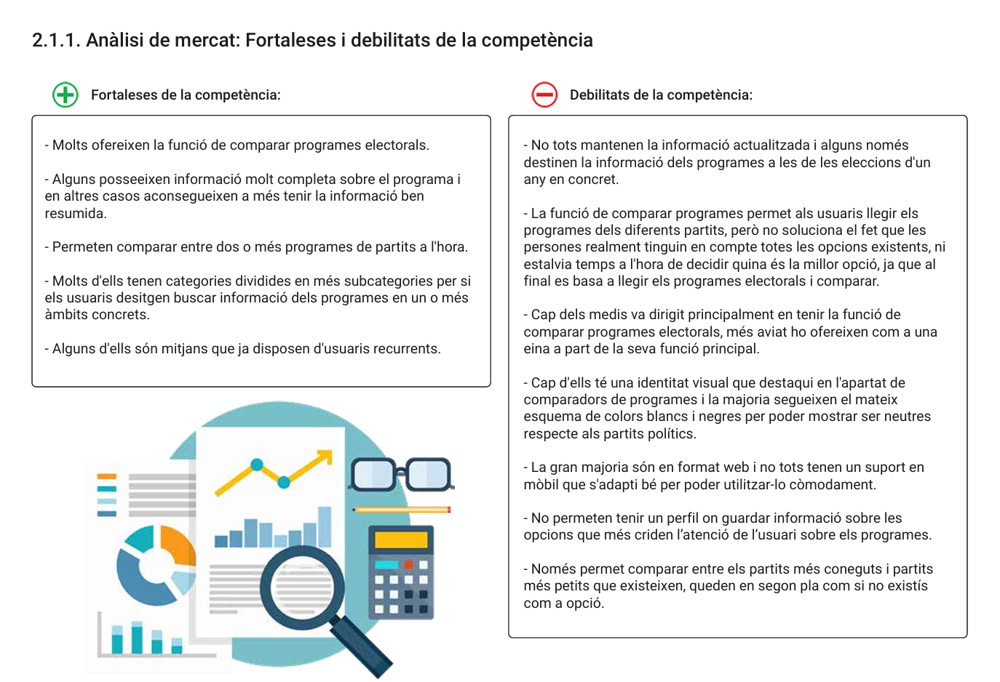
Identity of the Competition
COLORS
Most competing platforms use neutral color palettes dominated by white, black, and shades of gray: they do not have colors that stand out.
Color is generally reserved for highlighting political parties using their official colors or for small interface accents related to the platform's own branding. Overall, competitors tend to have restrained visual identities with minimal color usage.
GRAPHIC SIGNS
Competitors rely on simple iconography to represent categories and navigation. Although styles vary, most icons feature rounded shapes and minimal visual detail, contributing to a clean and approachable interface.
TYPOGRAPHIES
Across all analyzed products, typography follows similar principles. Sans-serif typefaces with regular or light weights are consistently used to maximize readability and maintain a neutral, professional appearance.
Communication Strategies of the Competition
Most competitors are news organizations or public institutions that promote their services through websites, social media, television, and traditional media.
Their communication focuses on three recurring messages:
- Neutrality and independence
- Reliability of information
- Helping users make informed decisions
Rather than emphasizing visual identity, these platforms position themselves as trustworthy sources of political information.
Brand positioning (Axis)
The competitive landscape revealed two main groups of products: Media organizations (El País, RTVE, Newtral) and Comparison tools (Elector, Tracker).
ElectoApp was positioned between both categories, combining impartial political information with an interactive experience centered on discovering political alignment through user preferences.
Project Objectives
The project aimed to create a digital platform that makes political decision-making more informed, accessible, and sustainable.
The main objectives were:
- Help users discover political parties based on policy preferences rather than popularity
- Simplify the comparison of electoral programs through an interactive questionnaire
- Increase visibility for smaller political parties
- Reduce paper waste associated with traditional election campaigns
- Design a friendly, approachable interface while maintaining political neutrality
- Allow users to save their results and revisit political information over time
- Provide ongoing information about how elected parties fulfill their campaign promises
Business Plan
The long-term vision for ElectoApp was to create a digital platform that combines political education, voting assistance, and public accountability.
Team:
- Editors responsible for maintaining political content and news.
- Developers responsible for maintaining and improving the platform.
- Cybersecurity specialists responsible for protecting user data and system integrity.
User Journey:
Users complete the political questionnaire, receive personalized results, and can explore detailed information about each party. Registered users can save their results and revisit them during future elections.
Growth Strategy:
The platform would primarily grow through digital marketing, social media, public campaigns, and word of mouth, positioning itself as an accessible and trustworthy political information tool.
Project Values & SWOT Analysis
The core values are:
- Accessibility
- Transparency
- Sustainability
SWOT Analysis (Strengths, Weaknesses, Threats and Opportunities)
Strengths:
- Interactive comparison of political programs
- Faster and easier than reading complete electoral programs
- Available across multiple platforms
- Clear, approachable interface
Weaknesses:
- Some users may distrust digital voting-related platforms
- Accessibility challenges for users with limited digital literacy
Opportunities
- Increase awareness of smaller political parties
- Promote informed voting
- Reduce environmental impact through digitalization
Definition of interactive product
ElectoApp was designed for eligible voters over the age of 18.
The product focuses on four key attributes:
- Accessible
- Transparent
- Educational
- Easy to use
Its purpose is to simplify political information and help users understand which parties best align with their values through an intuitive and engaging experience.
Communication Strategy & Naming
The name ElectoApp combines the concepts of elections and application, making the purpose of the product immediately recognizable.
The branding was designed to be simple, memorable, and politically neutral while clearly communicating the platform's digital nature.
Logo Evolution
The logo evolved through several iterations to represent digital voting without favoring any political symbolism.
Early concepts explored checkboxes and ballot papers. The final design combines a lowercase e with subtle envelope-inspired shapes, creating a friendly symbol that communicates electronic voting while maintaining a modern and approachable identity.
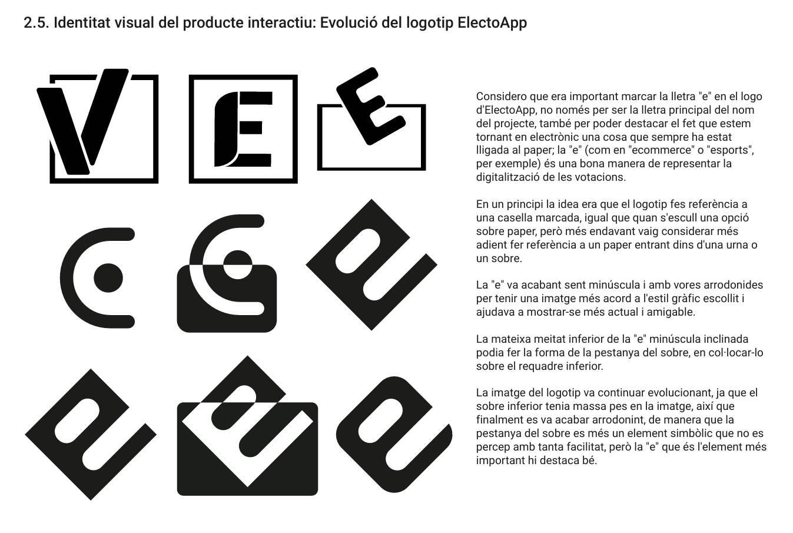
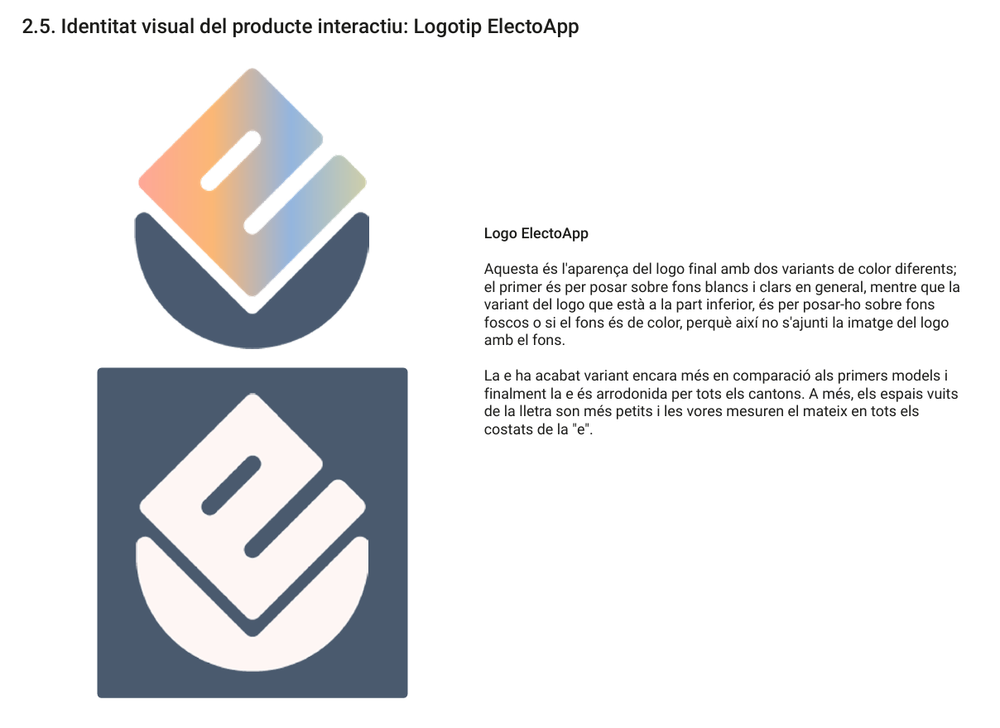
Color Palette
The color palette was intentionally desaturated to avoid associations with existing political parties.
An off-white background evokes paper ballots while creating a warmer interface than pure white. Multiple muted accent colors represent ideological diversity, while a dark navy blue provides sufficient contrast for primary actions and navigation.
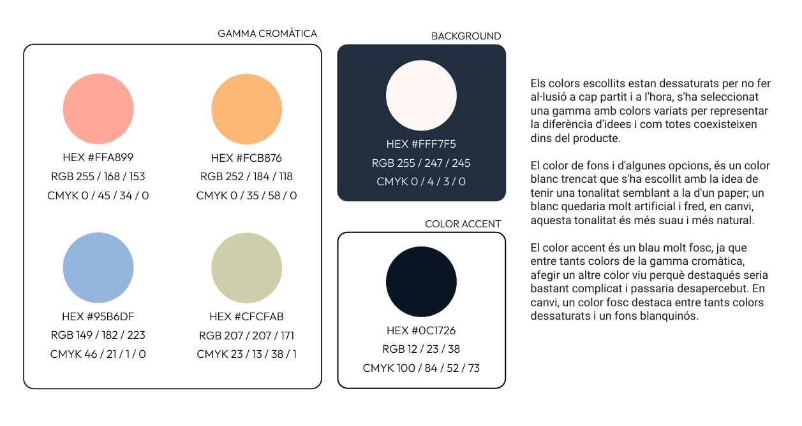
Typography
Two complementary typefaces were selected:
- Raleway Bold: for headings.
- Lato Regular: for body text.
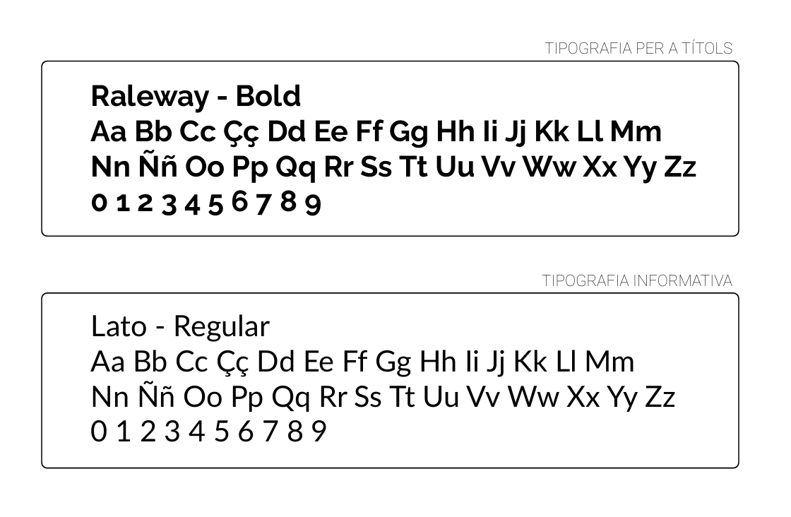
Grid System
The mobile interface uses a four-column grid to ensure consistency and visual balance.
Buttons generally span either two or four columns, creating predictable layouts throughout the application. Icons are consistently positioned beside text to improve scanning and recognition.
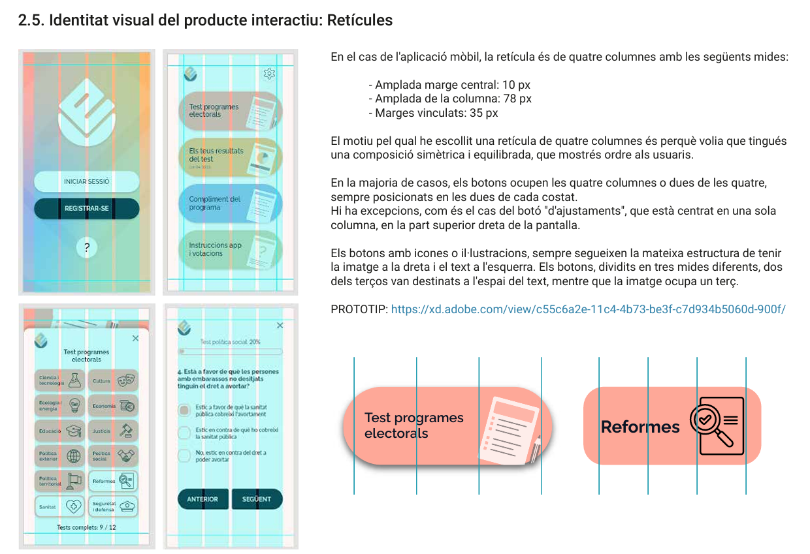
Graphic Elements
Icons were designed using a consistent stroke width and rounded geometry to reinforce the approachable visual identity.
Illustrations represent the application's four main sections:
- Political Tests
- Results
- Program Tracking
- Help & Voting Information
Button states visually distinguish completed and pending questionnaire sections, helping users track their progress.
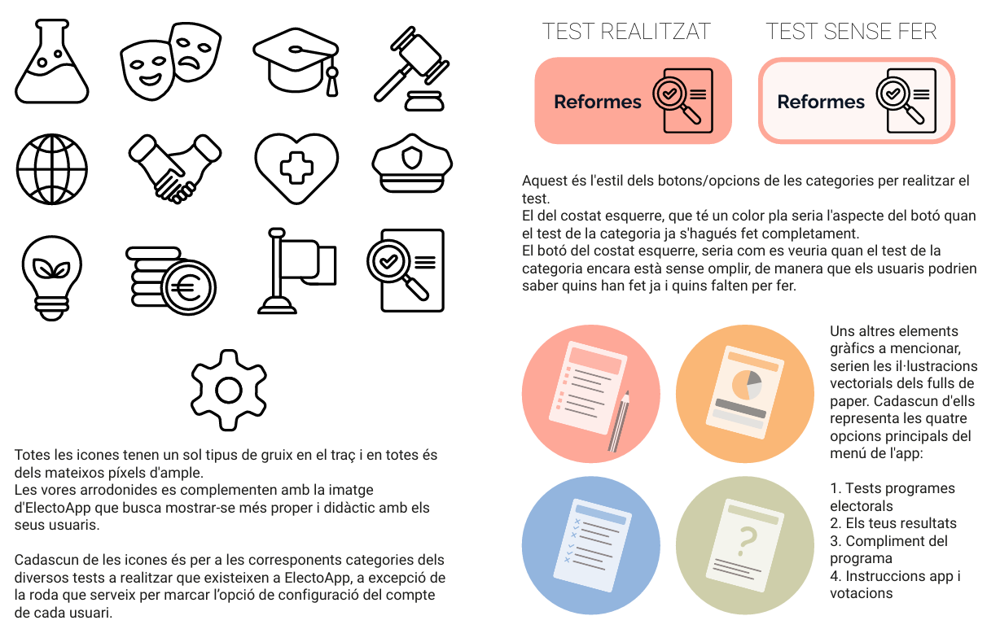
Components: Buttons & Inputs
The interface includes a consistent component system for buttons, forms, and navigation.
Primary and secondary buttons distinguish key actions such as registration and login, while navigation controls support moving through questionnaires.
Input fields provide immediate validation feedback, and disabled states clearly communicate unavailable actions.
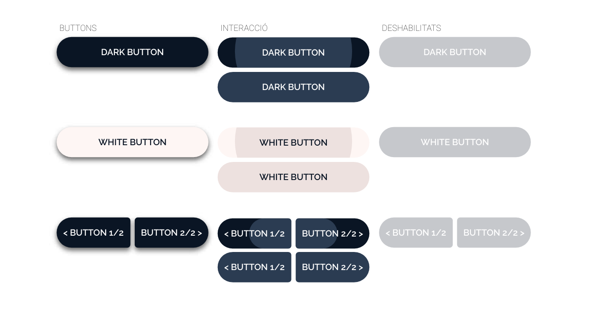
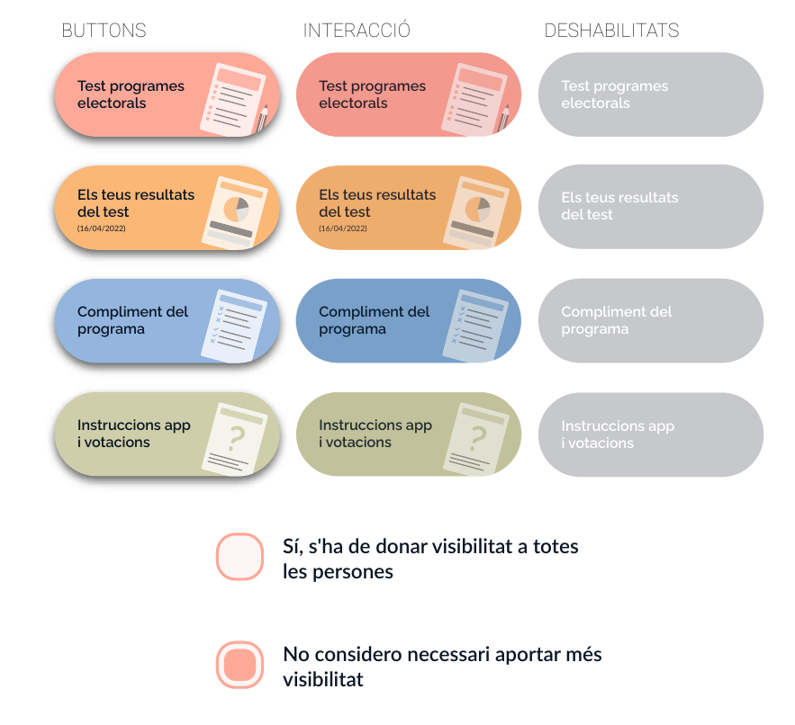
These are the inputs when we want to register or access our account:
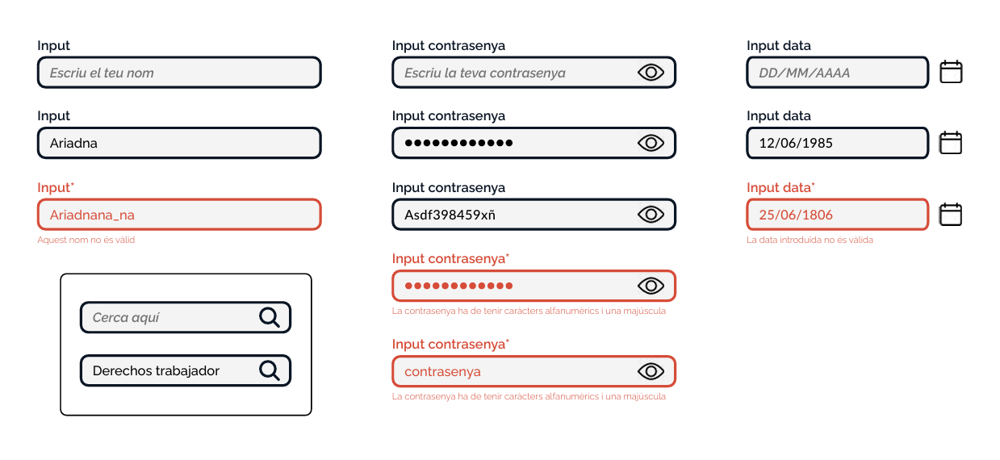
Technical Implementation
The interface was first designed and prototyped using Adobe Illustrator and Adobe XD before being implemented.
The final prototype was developed using:
- HTML
- CSS
- JavaScript
- PHP
- MySQL
Development and testing were carried out using Notepad++, FileZilla, and phpMyAdmin.
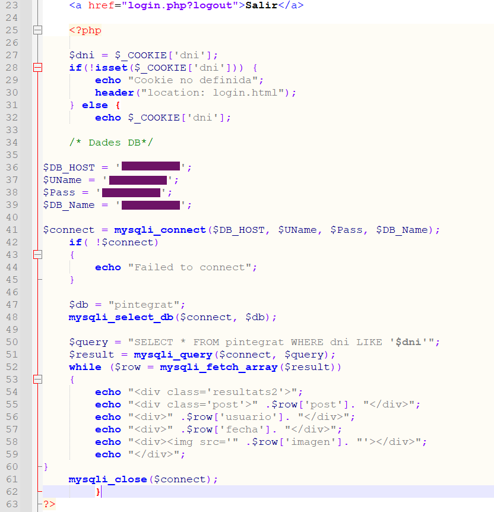
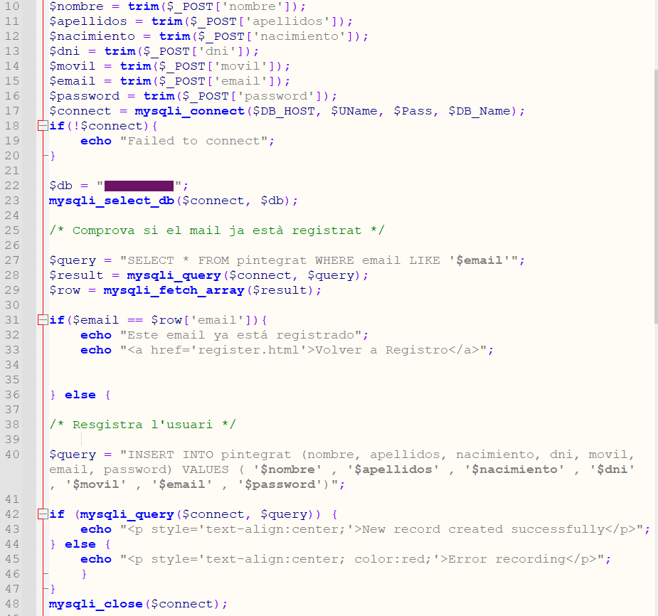
User Testing
Low-fidelity sketches and interactive Adobe XD prototypes were evaluated with users throughout the design process.
Testing revealed several improvements:
- Enlarged buttons to improve usability
- Simplified the results screen to reduce information overload
- Improved navigation between questionnaire sections
- Used color and component states to clearly communicate progress
These iterations significantly improved clarity and reduced cognitive load during the experience.
Final Outcome
Project presentation document: View Electoapp project PDF
First Prototype - AdobeXD: Electoapp first prototype
The project resulted in a fully designed mobile application prototype that demonstrates how complex political information can be transformed into a simple and accessible user experience.
The final solution combines a guided questionnaire, political program comparison, personalized results and follow-up information within a consistent design system.
Although developed as a conceptual project, ElectoApp demonstrates an end-to-end UX process including research, interaction design, visual design, prototyping and usability testing.
Reflection
This project highlighted the complexity of designing politically neutral systems that still communicate large amounts of structured information.
One of the key challenges was balancing clarity, neutrality, and engagement without introducing bias through visual design.
It also reinforced the importance of iterative testing when working with dense informational systems.